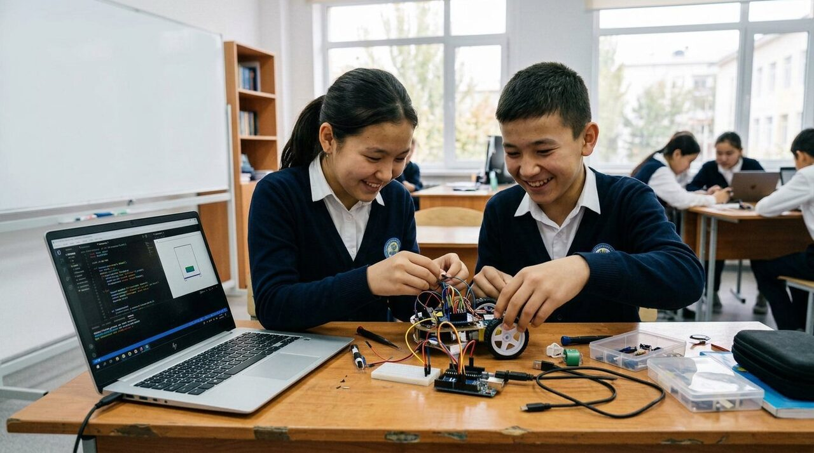
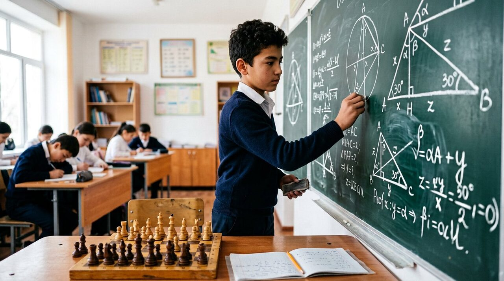
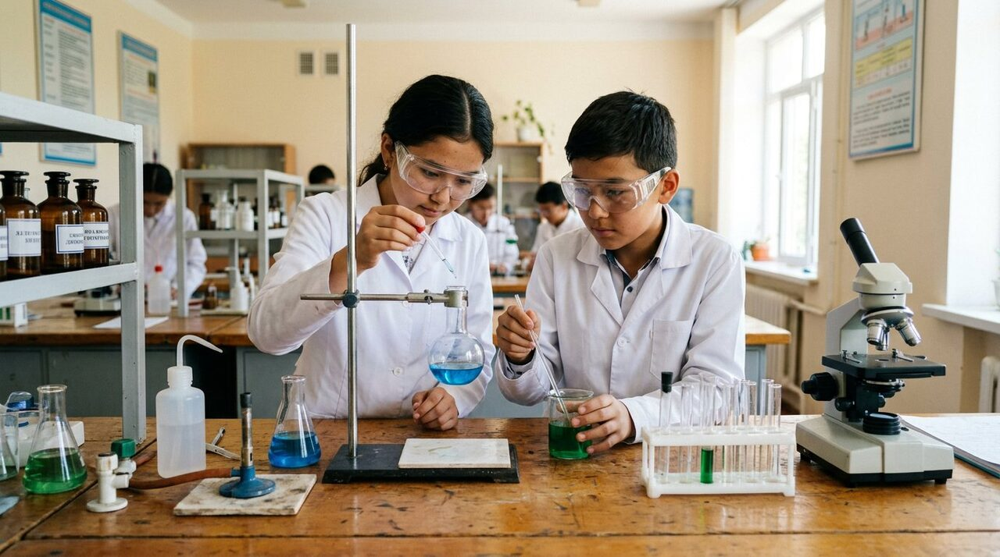
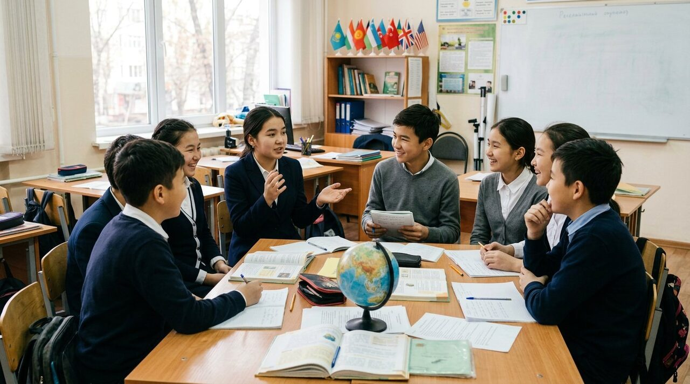
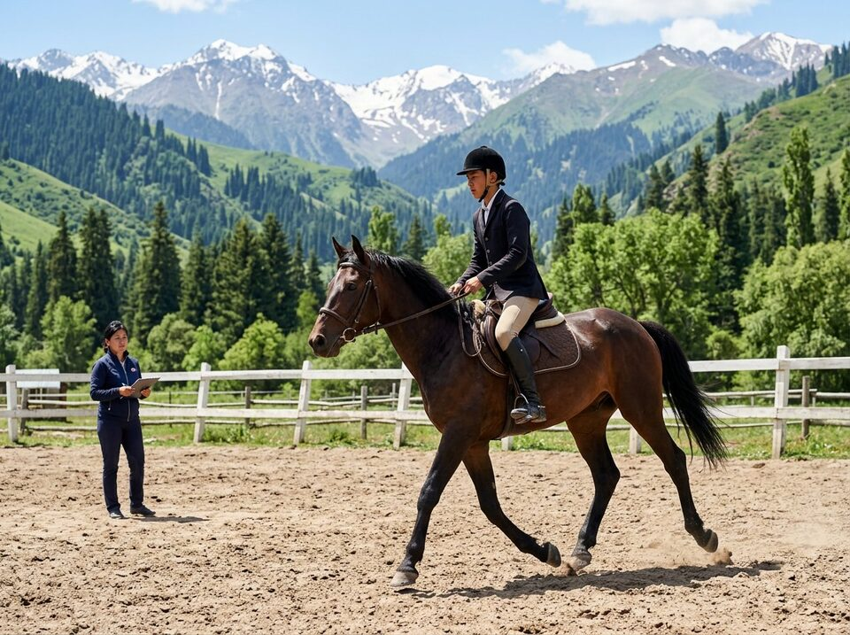
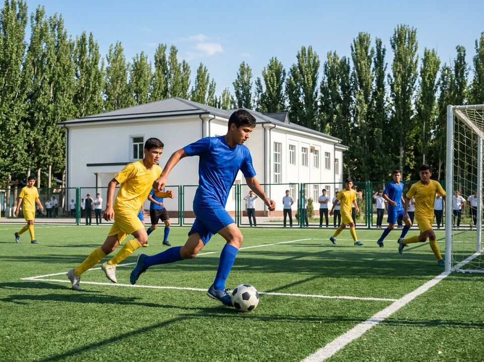

Robototexnika va IT
Blok dasturlashdan Python’gacha. O‘quvchilar robot yig‘adi, o‘yin va mobil ilova yaratadi.
- Dasturlash asoslari
- Robot yig‘ish va sozlash
- Kiberxavfsizlik va raqamli savodxonlik
O‘quvchi asosiy fanlar bilan birga o‘zi yoqtirgan yo‘nalishni chuqur o‘rganadi.

Blok dasturlashdan Python’gacha. O‘quvchilar robot yig‘adi, o‘yin va mobil ilova yaratadi.

Formulani yodlash o‘rniga masalani o‘zi tuzishga o‘rgatamiz. Olimpiadaga tayyorgarlik alohida guruhlarda.

Fizika, kimyo va biologiya tajribalar orqali o‘rganiladi. Har oy bitta kichik ilmiy tadqiqot.

Ingliz tili kundalik muloqot va akademik yozuv darajasida. Xalqaro imtihonlarga tayyorgarlik mavjud.


Ot sporti va futbol o‘quvchini chiniqtiradi, jamoada ishlashga va mas’uliyatga o‘rgatadi. Mashg‘ulotlar murabbiylar nazoratida o‘tadi.